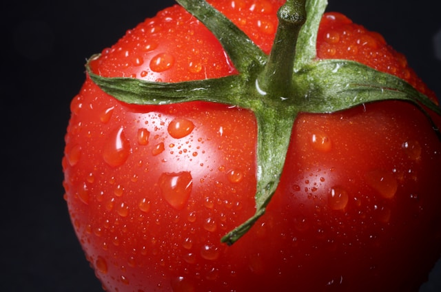
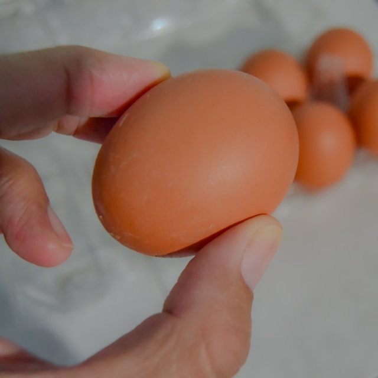
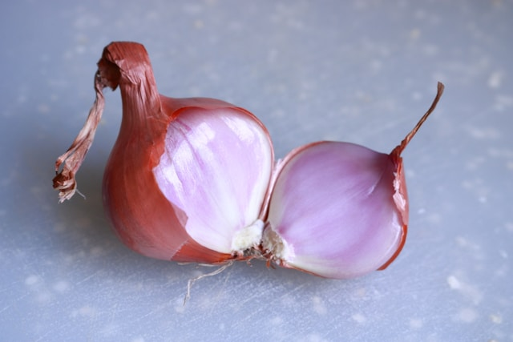

Geri Dön
Menemen Tarifi
Malzemeler
-
3 adet domates

-
2 adet yumurta

-
1 küçük boy soğan (isteğe bağlı)

-
2 yemek kaşığı zeytinyağı

-
Tuz

-
Karabiber

Adımlar
-
Malzemeleri hazırlama
- Domateslerin kabuklarını soyun ve küp küp doğrayın.
- Eğer kullanacaksanız, soğanı da ince ince doğrayın.
-
Soğanı Kavurma (isteğe bağlı)
- Tavanıza zeytinyağını ekleyin ve ısıtın.
- Soğanları ekleyip, orta ateşte pembeleşinceye kadar kavurun.
-
Domatesleri Ekleyin
- Doğranmış domatesleri tavanıza ekleyin.
- Tuz, karabiber ve isteğe bağlı olarak pul biber ekleyin.
- Domatesler suyunu salıp çekene kadar karıştırarak pişirin. Bu yaklaşık 5-7 dakika sürebilir.
-
Yumurtaları Ekleyin
- Domatesler pişip, kıvam aldıktan sonra yumurtaları kırın.
- Yumurtaları çok fazla karıştırmadan pişirin. Yumurtaların biraz parçalı kalmasını istiyorsanız, yavaşça karıştırabilirsiniz.
- Yumurtalar istediğiniz kıvama gelene kadar pişirin.
-
Servis
- Menemeni sıcak olarak servis edin. Yanında taze ekmek ile harika bir lezzet olur.